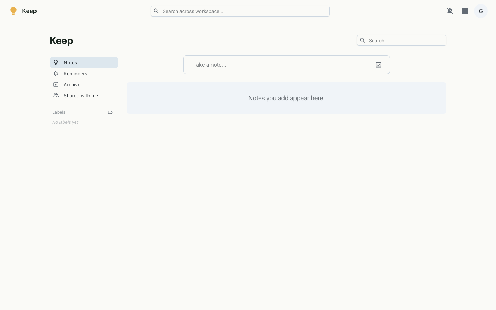

Quick notes and checklists — pinned, colour-coded and shareable, captured in seconds.
Keep is for the things you'd jot on a sticky note — a thought, a list, a reminder. Type a quick note or a checklist, give it a colour, pin the important ones to the top, and find anything later with full-text search. Notes lay out in a tidy masonry grid and can be shared with other people in the workspace.

Each note carries a title, body or checklist, a colour, any labels, an optional reminder and pin/archive flags. The interface updates optimistically as you edit, then syncs to the server. Sharing grants other users access to a specific note, governed by the same workspace single sign-on used across the platform.